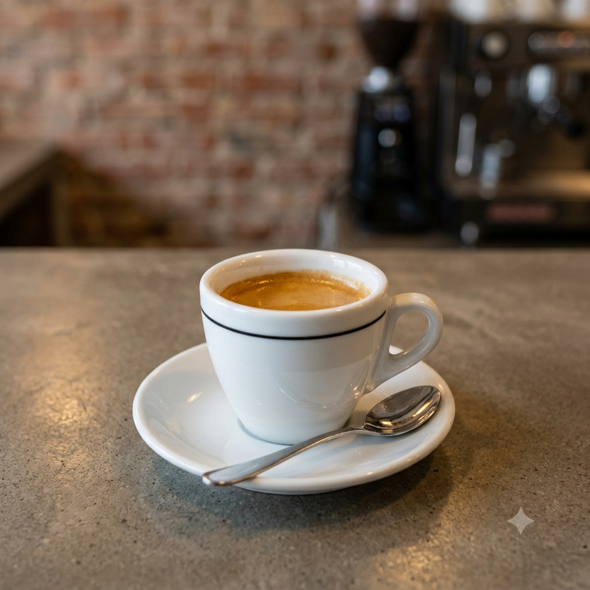
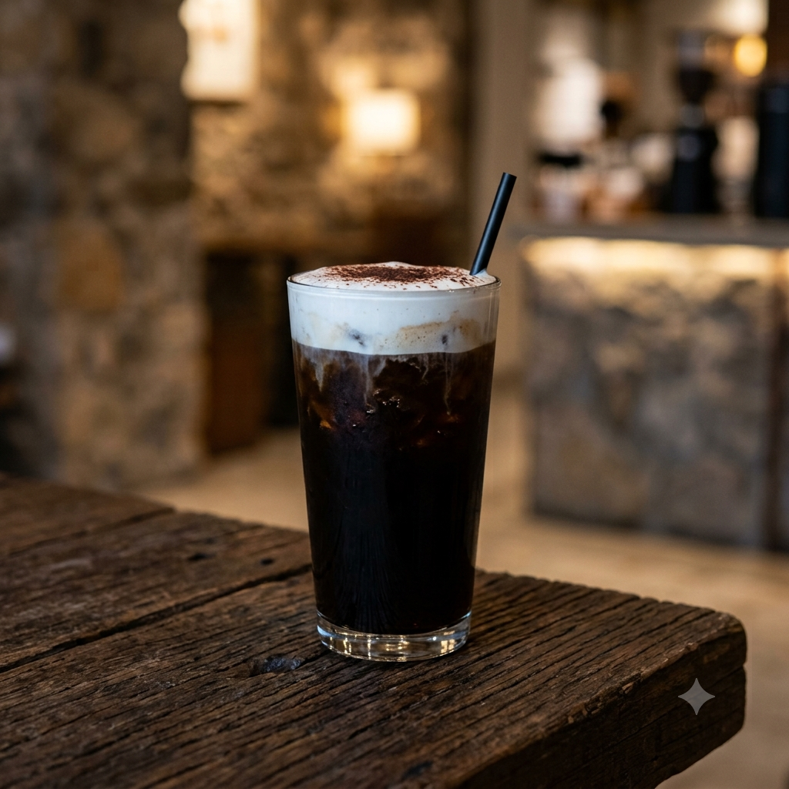
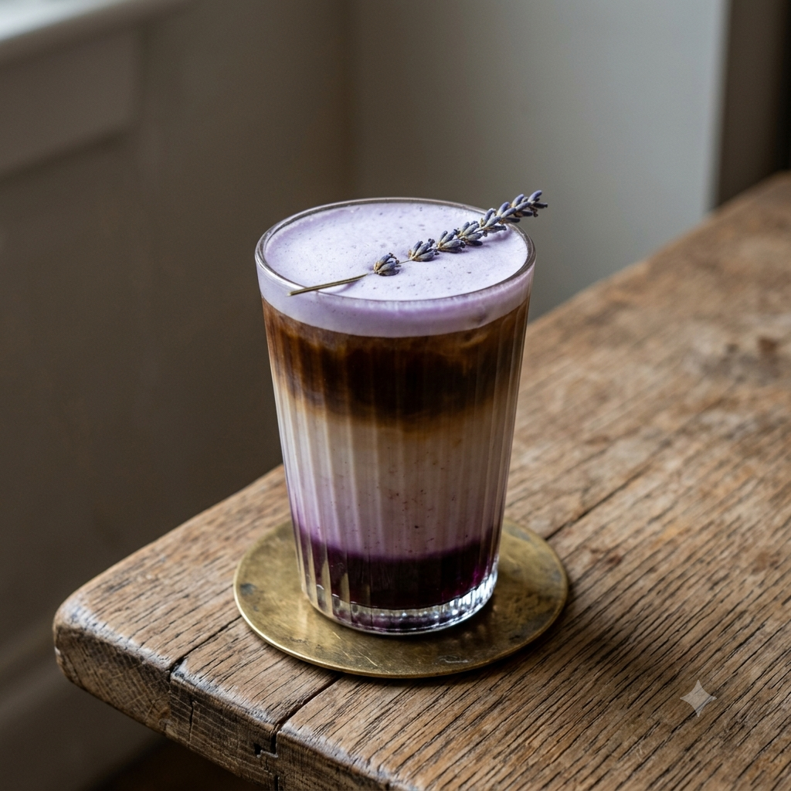
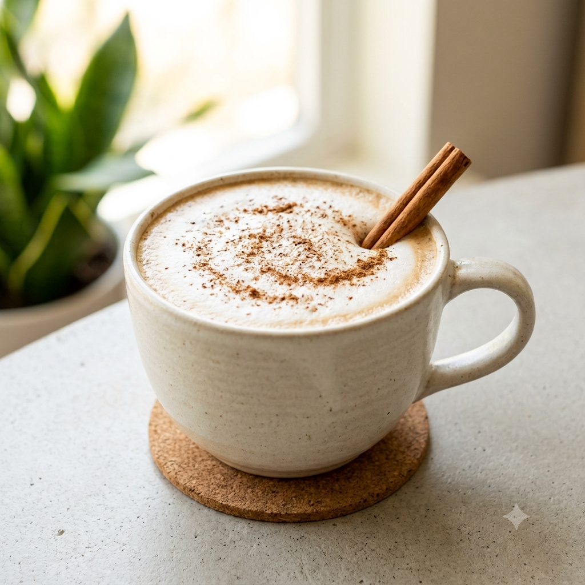
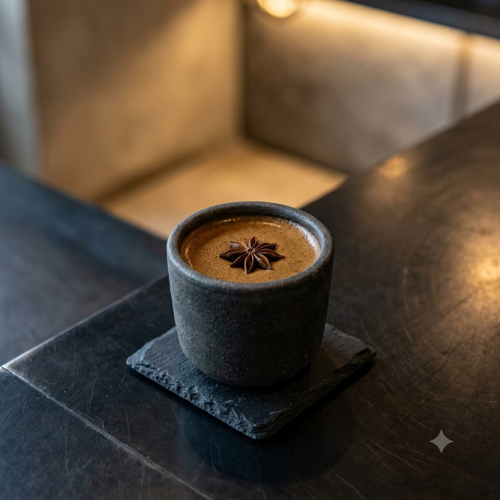
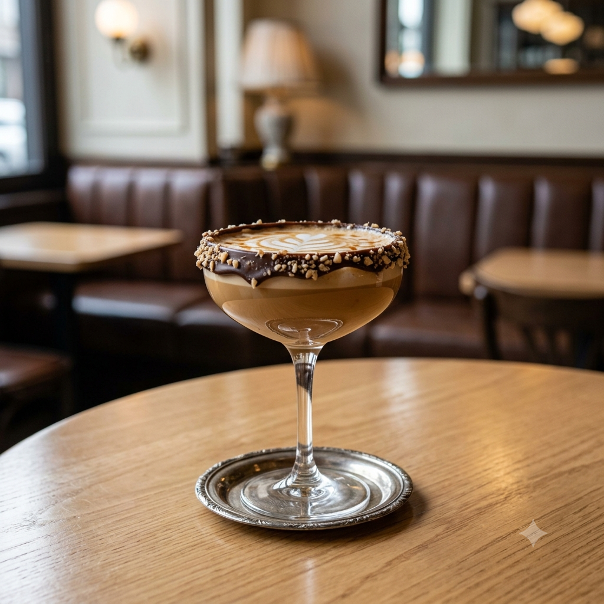
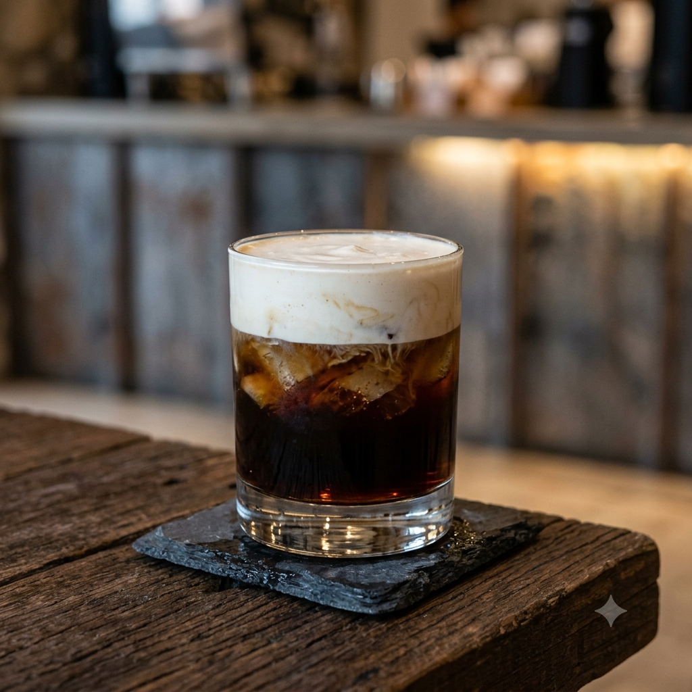

1. Black -
R$ 29,90Estilo: Purista & Cru (Quente)
Ingredientes: Espresso curto/simples tirado na perfeição, sem adição de leites ou xaropes.
A Experiência: Melancólico, visceral e sem distrações. Um café direto ao ponto, destacando toda a intensidade, a acidez natural e o amargor denso dos grãos selecionados.

2. Gimme Shelter -
R$ 29,90Estilo: Dark & Bold (Gelado)
Ingredientes: Double espresso, xarope de cacau 70%, e cold foam de baunilha no topo.
A Experiência: Um "refúgio" cremoso e marcante contra o calor, com o amargor do cacau contrastando com a suavidade da baunilha.

3. Purple Haze -
R$ 29,90Estilo: Psicodélico & Aromático (Gelado)
Ingredientes: Cold brew concentrado, leite de aveia, xarope artesanal de mirtilo e infusão sutil de frutas vermelhas.
A Experiência: Camadas visuais impressionantes em tons arroxeados, combinando a acidez limpa do cold brew a notas frutadas.

4. Comfortably Numb -
R$ 29,90Estilo: Suave & Envolvente (Quente)
Ingredientes: Espresso duplo, leite vaporizado bem aveludado, xarope de fava de baunilha, noz-moscada e canela polvilhada no topo.
A Experiência: O abraço quente perfeito para desacelerar o ritmo. Uma bebida cremosa com especiarias sutis que acalmam o paladar.

5. Black Dog -
R$ 29,90Estilo: Intenso & Encorpado (Quente)
Ingredientes: Ristretto duplo, xarope de especiarias (cardamomo e pimenta-da-jamaica) e melaço de cana com cacau amargo.
A Experiência: Um soco de energia direto ao ponto. Notas condimentadas e densas para quem busca um café com presença marcante.

6. Sweet Child O' Mine -
R$ 29,90 Estilo: Doce & Indulgente (Quente ou Gelado)Ingredientes: Espresso, leite vaporizado, calda de caramelo salgado artesanal, borda da taça decorada com ganache de chocolate e crocante de pralinê.
A Experiência: Sobremesa em forma de café. O equilíbrio clássico entre o salgado do caramelo, o doce do chocolate e a força do espresso.
7. Smoke on the Water -
R$ 29,90Estilo: Defumado & Texturizado (Gelado)
Ingredientes: Cold brew infusionado com baunilha defumada, servido sobre gelo e coberto por uma densa nuvem de cold foam de maple (xarope de bordo) que flutua como fumaça.
A Experiência: Uma mistura de densidades marcantes com notas amadeiradas e levemente adocicadas.